Word Representation and Embeddings
Chadi Helwe, PhD
CSC 464: Deep Learning for Natural
Language Processing
Introduction
Word Repr. and Embeddings
The Distributional Hypothesis
Definition: Words that occur in similar contexts tend to have similar meanings. First formulated in the 1950s by Joos (1950), Harris (1954), and Firth (1957).
The "Oculist" Example: Words like oculist and eye-doctor are synonyms because they appear in the same environments, such as near the words eye or examined.
The amount of meaning difference between two words corresponds roughly to the difference in their environments.
Word Repr. and Embeddings
Defining Embeddings
What are Embeddings? Vector representations of word meaning learned directly from distributions in text.
Vector Semantics: The linguistic field dedicated to studying these embeddings and their meanings.
Two Primary Types:
-
Static Embeddings: Fixed representations for each word (e.g., Word2Vec).
-
Dynamic/Contextualized Embeddings: Representations that change based on the specific context (e.g., BERT).
Word Repr. and Embeddings
Representation Learning
Self-Supervised Learning: Modern NLP relies on automatically learning useful representations of text rather than hand-crafting features (feature engineering).
The Power of Space: Meaning is represented as a point in a multidimensional semantic space.
Why it Matters: Embeddings are at the heart of Large Language Models (LLMs) and enable systems to understand that "cat" is similar to "dog" without being explicitly told.
Lexical Semantics
Word Repr. and Embeddings
Desiredata for a Model of Meaning
What should a computational model of word meaning actually do?
-
Similarity: Recognize that "cat" and "dog" are similar.
-
Opposites: Identify antonyms like "hot" and "cold".
-
Connotation: Distinguish between positive ("happy") and negative ("sad") sentiments.
-
Inference: Understand overlapping perspectives, such as the relationship between "buy," "sell," and "pay" in a single transaction.
Word Repr. and Embeddings
Lemmas and Windforms
Lemma (Citation Form): The base form of a word.
-
Example: "mouse" is the lemma for "mice".
-
Example: "sing" is the lemma for "sang" and "sung".
Wordform: The specific inflected version of a word as it appears in text.
-
Example: "sung" or "sang".
Word Repr. and Embeddings
Synonymy and the Principle of Contrast
Synonymy: When two different words have senses that are nearly identical in meaning.
-
Examples: couch/sofa, car/automobile, vomit/throw up.
The Principle of Contrast: The linguistic rule that any difference in form implies a difference in meaning.
-
Contextual Appropriateness: "\(H_2O\)" is used in scientific papers, while "water" is used in hiking guides; they are not interchangeable in all genres.
Word Repr. and Embeddings
Lemmas and Wordforms
Word Sense: A discrete aspect of a lemma's meaning.
Polysemy: The phenomenon where a single lemma has multiple senses.
-
Example: The lemma mouse can refer to a small rodent or a computer cursor control device.
The Challenge: Determining which sense is active in a specific context (e.g., is a search for "mouse info" looking for a pet or hardware?).
Word Repr. and Embeddings
Word Similarity
From Binary to Scale: While synonymy is often seen as a binary (yes/no) relationship, word similarity exists on a scale.
The Concept: Words like "cat" and "dog" are not synonyms, but they are highly similar because they share many features.
Human Judgments: We can quantify this similarity by asking humans to rate word pairs on a scale, such as 0 to 10.
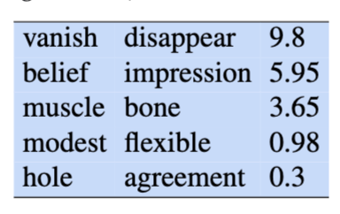
Word Repr. and Embeddings
Word Relatedness (Association)
Beyond Similarity: Two words can be related without being similar.
The "Coffee/Cup" Test: Coffee is not similar to a cup (one is a beverage, the other an object), but they are linked because they share the same event.
Semantic Fields: A set of words covering a specific domain with structured relations.
-
Hospital Field: Surgeon, scalpel, nurse, anesthetic.
-
Restaurant Field: Waiter, menu, plate, food, chef.
Topic Models: Unsupervised learning (e.g., LDA) can induce these associated word sets from large text corpora.
Word Repr. and Embeddings
Connotations and Affective Meaning
Affective Meaning: The aspects of a word’s meaning related to emotions, sentiment, or evaluations.
-
Positive: Innocent, copy, replica.
-
Negative: Naive, fake, forgery.
Subtle Differences: Similar words can have vastly different connotations.
Sentiment Analysis: Identifying positive (great, love) vs. negative (terrible, hate) evaluation language is a core NLP task.
Word Repr. and Embeddings
The Three Dimensions of Emotion
Osgood’s Model (1957): Early work found that words vary along three primary dimensions:
-
Valence: The pleasantness of the stimulus.
-
Arousal: The intensity of the emotion provoked.
-
Dominance: The degree of control exerted by the stimulus.
Vector Birth: This model was the first to represent word meaning as a point in a multi-dimensional space (a vector).
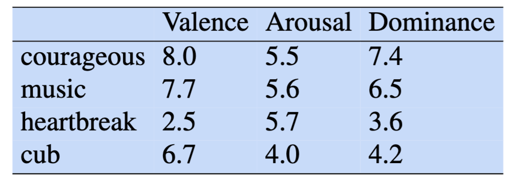
Simple Count-based Embeddings
Word Repr. and Embeddings
Transitioning to Vector Semantics
The Synthesis: Vector semantics combines the Distributional Hypothesis (Firth/Harris) with the Spatial Representation (Osgood).
Representation: A word is no longer a string; it is a point in a multi-dimensional semantic space derived from its neighbors.
Embeddings: These vectors are "embedded" into space, allowing us to use geometry to solve language problems.
Word Repr. and Embeddings
Building a Word-Context Matrix
The Goal: Represent how often words appear near each other in a text.
Matrix Structure:
-
Each row is a "target" word we want to represent.
-
Each column is a "context" word that appears nearby.
Dimensionality: In a real system, the matrix is \(|V| \times |V|\) (vocabulary size by vocabulary size), though we usually focus on the most frequent 10,000 to 50,000 words.
Word Repr. and Embeddings
What Does "Nearby" Mean?
The Context Window: We define a "window" of words around our target.
Standard Practice: A common choice is \(\pm4\) words (4 words to the left and 4 to the right).
The Process: For every instance of a word in a corpus, we count which words appear within that window.
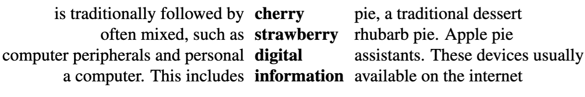
Word Repr. and Embeddings
Co-occurence Matrix
Let’s look at how we count specific words (cherry, strawberry, digital, information) based on their neighbors.
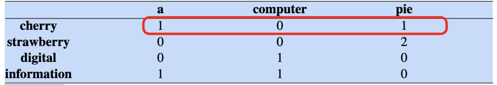
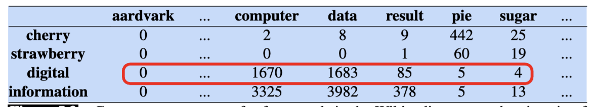
Word Repr. and Embeddings
Visualizing Words in Space
Vectors as Points: Each row in our table is a vector (a list of numbers).
Spatial Relationship: Words with similar counts will be located near each other in a multi-dimensional space.
Dimensions: In this example, the dimensions are the context words (pie, data, computer).
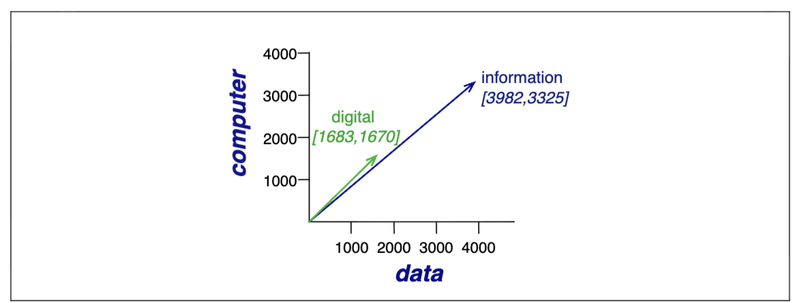
Word Repr. and Embeddings
A 2-Dimensional (t-SNE) Visualization
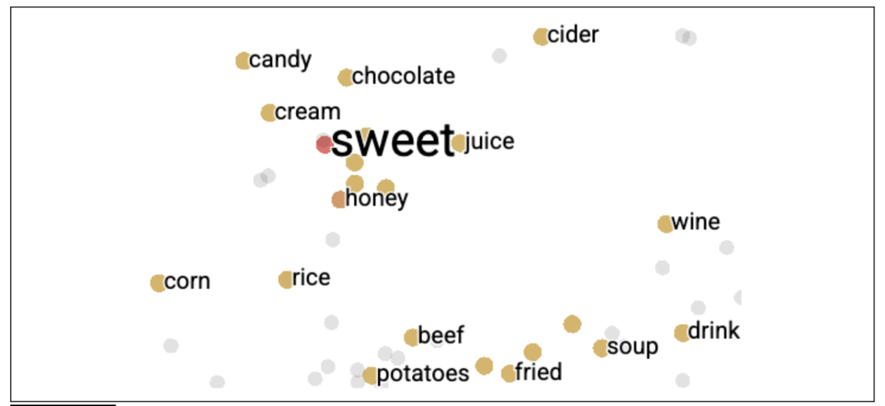
Cosine Similarity
Word Repr. and Embeddings
How to Measure Similarity?
We need a mathematical way to take two word vectors and calculate a score for how "close" they are in meaning.
The Dot Product: This is the most basic building block for measuring similarity.
$$\text{dot product}(v, w) = v \cdot w = \sum_{i=1}^{N} v_i w_i = v_1 w_1 + v_2 w_2 + \dots + v_N w_N$$
High Similarity: The dot product tends to be high when both vectors have large values in the same dimensions.
Dissimilarity (Orthogonality): If the have zeros in different dimensions, they are considered orthogonal.
Word Repr. and Embeddings
Cosine Similarity (1/3)
The raw dot product is not a perfect similarity metric because it naturally favors long vectors.
How to fix it?
Normalizing for Frequency: To compare words fairly, we must adjust for the length of the vector so that word frequency doesn't bias the results.
The vector length is:
$$|v|= \sqrt{\sum_{i=1}^{N} v_i^2}$$
Word Repr. and Embeddings
Cosine Similarity (2/3)
We modify the dot product to normalize it by dividing by the lengths of the two vectors.
This normalized dot product turns out to be the same as the cosine of the angle between the two vectors, following from the definition of the dot product between two vectors a and b:
$$a \cdot b = |a||b| \cos \theta$$
$$\frac{a \cdot b}{|a||b|} = \cos \theta$$
1.0 (Maximum Similarity): The vectors point in the exact same direction (the angle is \(0^{\circ}\))
0.0 (No Similarity): The vectors are "orthogonal" (at a \(90^{\circ}\) angle), meaning they share no common context.
Word Repr. and Embeddings
Cosine Similarity (3/3)
The cosine similarity metric between two vectors \(v\) and \(w\) thus can be computed as:
$$\text{cosine}(v, w) = \frac{v \cdot w}{|v||w|} = \frac{\sum_{i=1}^{N} v_i w_i}{\sqrt{\sum_{i=1}^{N} v_i^2} \sqrt{\sum_{i=1}^{N} w_i^2}}$$
Word Repr. and Embeddings
Example of Cosine Similarity (1/2)
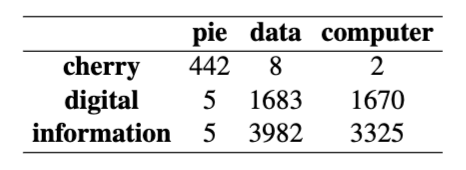
Let's compute the cosine similarity:
$$\cos(\text{cherry}, \text{information}) = \frac{442 * 5 + 8 * 3982 + 2 * 3325}{\sqrt{442^2 + 8^2 + 2^2} \sqrt{5^2 + 3982^2 + 3325^2}} = .018$$
$$\cos(\text{digital}, \text{information}) = \frac{5 * 5 + 1683 * 3982 + 1670 * 3325}{\sqrt{5^2 + 1683^2 + 1670^2} \sqrt{5^2 + 3982^2 + 3325^2}} = .996$$
Word Repr. and Embeddings
Example of Cosine Similarity (2/2)
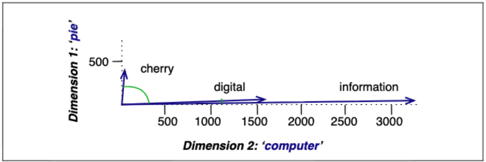
Word2Vec
Word Repr. and Embeddings
Introduction to Word2Vec Embeddings
Dense Vectors: Unlike sparse vector models, Word2Vec produces dense, short vectors.
Dimensionality: These embeddings have a number of dimensions \(d\) ranging from 50 to 1000, rather than the much larger vocabulary size \(|V|\).
Advantages over Sparse Vectors: The smaller parameter space possibly helps with generalization and avoiding overfitting. Dense vectors may also do a better job of capturing synonymy, which sparse vectors may fail to capture since dimensions for synonyms are distinct.
Algorithm Families: Word2Vec loosely refers to algorithms like skip-gram.
Word Repr. and Embeddings
Introduction to Skip-Gram
Self-Supervision: The algorithm learns implicitly by using running text as a supervision signal, avoiding the need for any sort of hand-labeled supervision signal.
The Binary Classification Task: Instead of predicting the next word, Skip-Gram trains a classifier on a binary prediction task: "Is word c likely to show up near the target word?".
Simplified Architecture: Skip-gram simplifies the architecture by training a logistic regression classifier instead of a multi-layer neural network.
The Goal: The actual prediction task is not the goal; instead, the learned classifier weights are taken as the word embeddings.
Word Repr. and Embeddings
The Intuition of Skip-Gram
The Intuition of Skip-Gram is:
-
Treat the target word and a neighboring context word as positive examples.
-
Randomly sample other words in the lexicon to get negative samples.
-
Use logistic regression to train a classifier to distinguish those two cases.
-
Use the learned weights as the embeddings.
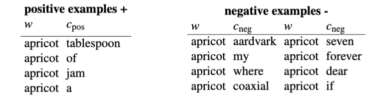
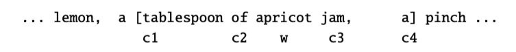
Word Repr. and Embeddings
The Model Parameters (1/2)
Two Matrices: Skip-Gram stores two embeddings for each word, meaning the parameters learned are two matrices \(W\) and \(C\), resulting in \(2|V|\) vectors of dimension \(d\).
-
Target Embeddings (\(W\)): One embedding for the word as a target.
-
Context Embeddings (\(C\)): One embedding for the word considered as context.
Computing Probability: The probability that \(c\) is a real context word for target word \(w\) is modeled using the logistic or sigmoid function \(\sigma(x)\) applied to the dot product of the embeddings.
$$P(+|w,c)=\sigma(c\cdot w)=\frac{1}{1+\exp(-c\cdot w)}$$
Word Repr. and Embeddings
The Model Parameters (2/2)
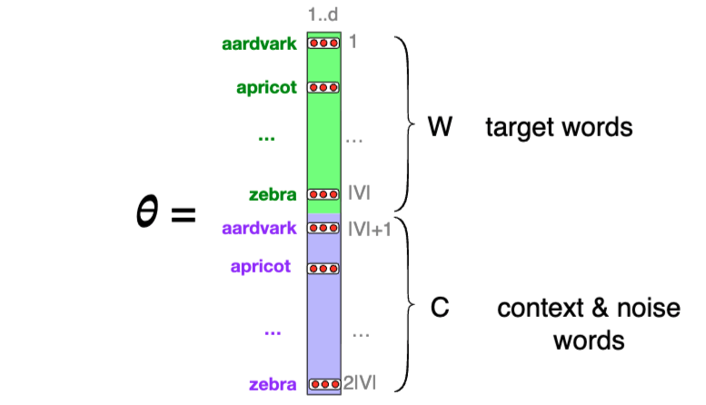
Word Repr. and Embeddings
The Context Window and Independence Assumption
The Window: Skip-gram evaluates a target word \(w\) and a context window of \(L\) words \(c_{1:L}\).
Independence: The model makes the simplifying assumption that all context words are independent.
Joint Probability: This independence assumption allows the model to multiply the individual probabilities of each context word:
$$P(+|w,c_{1:L})=\prod_{i=1}^{L}\sigma(c_{i}\cdot w)$$
$$\log P(+|w,c_{1:L})=\sum_{i=1}^{L}\log \sigma(c_{i}\cdot w)$$
In practice, we use the sum of log probabilities
Word Repr. and Embeddings
Building the Training Data (Negative Sampling) (1/2)
Positive Examples: A target word and a neighboring context word are treated as positive examples. For instance, a target word "apricot" paired with a real context word like "jam".
Negative Examples: The model randomly samples other words in the lexicon, constrained not to be the target word, to get negative samples (noise words).
Word Repr. and Embeddings
Building the Training Data (Negative Sampling) (2/2)
The Ratio (\(k\)): Skip-gram with negative sampling uses \(k\) negative samples for each positive example.
Weighted Unigram Probability: Noise words are chosen according to their weighted unigram probability \(P_\alpha(w)\). Setting \(\alpha=0.75\) is common because it gives rare noise words slightly higher probability.
$$P_\alpha(w)=\frac{\text{count}(w)^\alpha}{\sum_{w'}\text{count}(w')^\alpha}$$
Word Repr. and Embeddings
The Skip-Gram Loss Function (1/2)
The goal is to maximize the similarity of target and context word pairs from positive examples, and minimize the similarity of pairs from negative examples.
Loss Equation: For a target \(w\), positive context \(c_{pos}\), and \(k\) negative noise words, the loss function \(L\) to be minimized is:
$$L=-[\log \sigma(c_{pos}\cdot w)+\sum_{i=1}^{k}\log \sigma(-c_{neg_{i}}\cdot w)]$$
This maximizes the dot product of the word with actual context words, and minimizes the dot products of the word with the \(k\) negative sampled non-neighbor words.
Word Repr. and Embeddings
The Skip-Gram Loss Function (2/2)
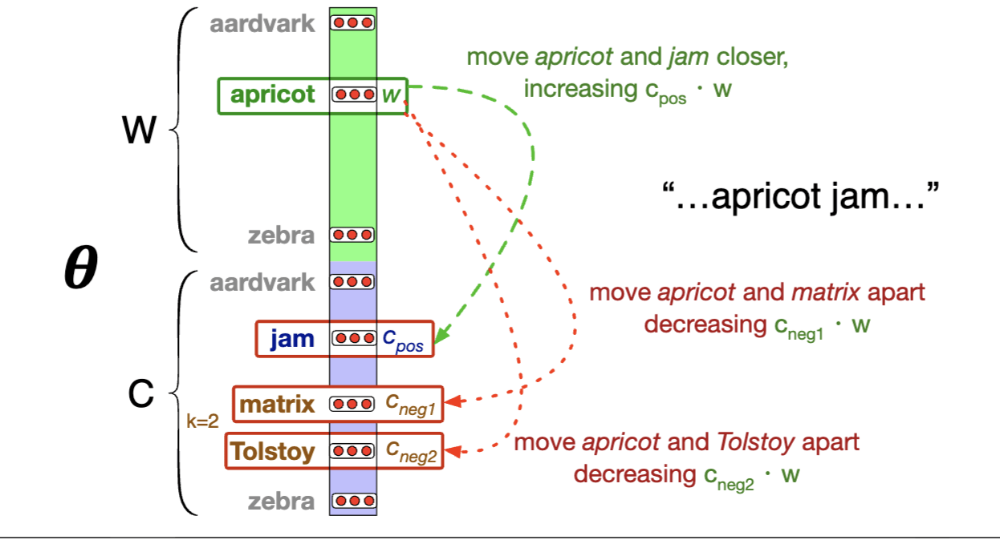
Word Repr. and Embeddings
Calculating the Gradients
To get the gradient for optimization, we take the derivative of the loss function with respect to the different embeddings.
$$\frac{\partial L}{\partial c_{pos}}=[\sigma(c_{pos}\cdot w)-1]w$$
$$\frac{\partial L}{\partial c_{neg_{i}}}=[\sigma(c_{neg_{i}}\cdot w)]w$$
$$\frac{\partial L}{\partial w}=[\sigma(c_{pos}\cdot w)-1]c_{pos}+\sum_{i=1}^{k}[\sigma(c_{neg_{i}}\cdot w)]c_{neg_{i}}$$
Word Repr. and Embeddings
Stochastic Gradient Descent Updates
The learning algorithm starts with randomly initialized \(W\) and \(C\) matrices and uses stochastic gradient descent to move them to minimize the loss. Moving from time step \(t\) to \(t+1\) with learning rate \(\eta\):
$$c_{pos}^{t+1}=c_{pos}^{t}-\eta[\sigma(c_{pos}^{t}\cdot w^{t})-1]w^{t}$$
$$c_{neg_{i}}^{t+1}=c_{neg_{i}}^{t}-\eta[\sigma(c_{neg_{i}}^{t}\cdot w^{t})]w^{t}$$
$$w^{t+1}=w^{t}-\eta[[\sigma(c_{pos}^{t}\cdot w^{t})-1]c_{pos}^{t}+\sum_{i=1}^{k}[\sigma(c_{neg_{i}}^{t}\cdot w^{t})]c_{neg_{i}}^{t}]$$
Word Repr. and Embeddings
Other Static Embeddings
Fasttext: An extension of Skip-gram addresses the problem of unknown words unseen in the training corpus and word sparsity in languages with rich morphology.
Fasttext represents each word as itself plus a bag of constituent n-grams; the word is represented by the sum of the embeddings of its constituent n-grams.
Example: n = 3 <where> + <wh, whe, her, ere, re>
GloVe (Global Vectors): Another widely used static embedding model based on ratios of probabilities from the word-word co-occurrence matrix.
Word Repr. and Embeddings
Relational Similarity and Analogies
The Parallelogram Model: Proposed for solving simple analogy problems of the form \(a\) is to \(b\) as \(a^*\) is to what?.
The algorithm subtracts vector \(a\) from \(b\) and adds \(a^*\) , finding \(b^*\) through \(b^*=\text{argmin}_x \text{distance}(x, b-a+a^*)\).
Example: The model extracts relational meanings, so the result of the expression \(\vec{tree}-\vec{apple}+\vec{grape}\) is a vector close to \(\vec{vine}\).
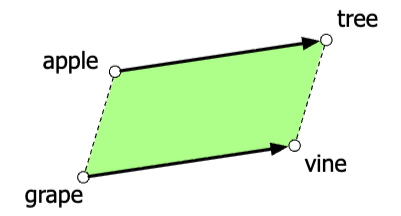
Word Repr. and Embeddings
Python Example
import gensim.downloader as api
# 1. Load a pre-trained Word2Vec model (Google News 300d is standard)
# This model uses the dense vector representations (d=300) discussed in class
model = api.load('word2vec-google-news-300')
# 2. Word Similarity: Finding words that occur in similar contexts
# Demonstrates the Distributional Hypothesis (Harris, 1954; Firth, 1957)
similarity = model.similarity('cherry', 'strawberry')
print(f"Similarity between 'cherry' and 'strawberry': {similarity:.3f}")
# 3. Relational Similarity: Solving Analogies (The Parallelogram Model)
# "tree" is to "apple" as "vine" is to "?" -> Result should be "grape"
# formula: b* = argmin(distance(x, b - a + a*))
result = model.most_similar(positive=['tree', 'grape'], negative=['apple'], topn=1)
print(f"Analogy: tree - apple + grape = {result[0][0]}")
# 4. Accessing the raw vector (The "Vector Birth")
vector = model['apricot']
print(f"First 5 dimensions of 'apricot' vector: {vector[:5]}")